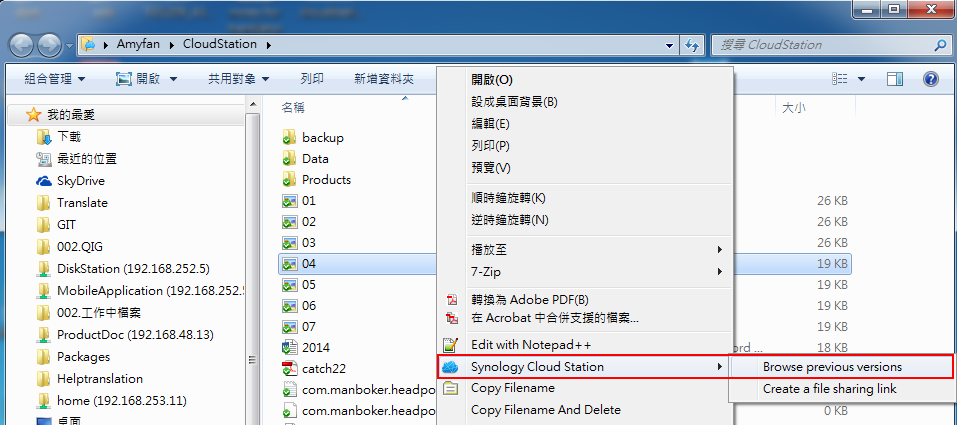

Oversigt
Cloud Station er ikke kun en sofistikeret synkroniseringssoftware på tværs af platforme. Brugere kan bruge den som en smartere måde at udføre backup af deres personlige computere. Der er nogle fordele ved at bruge Cloud Station som backuppartner. For det første giver realtidskopiering en bedre RPO, kortere periode, hvor data kan være mistet (kan ikke gendannes) fra din computer i tilfælde af en større hændelse. Det reagerer ikke blot øjeblikkeligt, men det hjælper dig også med at spare båndbredde dramatisk sammenlignet med traditionel backup, der bruger store mængder båndbredde inden for et givet tidsrum. Du kan nemt filtrere filer i den samme mappe, som du ikke vil have udført backup på ved at indstille filstørrelse eller filtype på computerklienten. Cloud Station kan også opbevare op til 32 historikversioner af en fil, som Cloud Station sætter dig i stand til at gendanne på en PC-klient fra server (NAS)-siden.
1. Konfigurer Cloud Station på eCore Server
- Log ind på DSM med en konto fra administrator.
- Start Cloud Station.
- Hvis du ikke har aktiveret brugerstartfunktionen, bliver du bedt om at gøre det. Klik på OK.
- Du bliver omdirigeret til brugerindstillingssiden. Aktiver brugerstart, og klik på Anvend.
- Gå så tilbage til Cloud Station, hvor du bedes om at aktivere den. Klik på Ja.
- Gå til Privilegier, og angiv de brugere, der kan bruge Cloud Station. Klik på Gem.
- Konfigurer en delt mappe på din eCore Server til backupformål. De gør du ved at gå til Kontrolpanel > Delt mappe og klikke på Opret.
- Navngiv mappen, og udfyld detaljerne. Klik på OK. Vi vil f.eks. navngive mappen Backup.
- På fanen Tilladelser angives de brugere, der kan få adgang til mappen. Vi vil f.eks. give admin Læse/skrive-tilladelser til mappen. Klik på OK.
- Gå til Cloud Station > Indstillinger > Deling, og vælg mappen Backup, og klik på Aktiver.


2. Konfigurer Cloud Station på din Windows-computer
Følg trinnene til konfiguration af Cloud Station på din Mac eller PC
2.1 Til PC
- Gå til Cloud Station > Oversigt, og klik på knappen Download.
- Klik på knappen for at downloade Cloud Station til Windows PC. (Du kan også downloade Cloud Station fra Synologys Downloadcenter.)
- Start installationsprogrammet på computeren, og følg instruktionerne til installation af Cloud Station.
- Efter installationen kører du Cloud Station på computeren. Klik på Start nu
- Indtast adressen på den eCore Server, der kører Cloud Station (eller QuickConnect ID), brugernavn og adgangskode. (Du kan også klikke på søgeikonet til højre, hvorefter Cloud Station automatisk vil søge efter andre eCore Server på dit LAN). Klik på Næste.
- Vælg, hvordan vil du konfigurere din opgave (her vælger vi Avanceret konfiguration, da vi konfigurerer en mappe specielt til backup). Klik på Næste.
- Vælg en mappe på computeren for at holde den synkroniseret med mappen Backup, som du tidligere oprettede på din eCore Server. Klik på Næste.
- Klik på Udført for af fuldføre konfiguration.


Sådan opretter du en opgave til:
- Gå til Cloud Station > Indstillinger, og aktiver en delt mappe til denne nye opgave. Mit eksempel er photo. Sørg for, at du har læse/skrive-privilegier til photo.
- Konfigurer Cloud Station på din PC ved at klikke på Opret.
- Vælg en eCore Server til din nye opgave. Her skal vi vælge Tilsluttet eCore Server, da vi opretter endnu en opgave til den samme eCore Server. Klik på Næste.
- Vælg Avanceret konfiguration, og følg resten af guiden for at fortsætte konfigurationen.


2.2 Til Mac
- Gå til Cloud Station > Oversigt, og klik på knappen Download.
- Klik på knappen for at downloade Cloud Station til Mac. (Du kan også downloade Cloud Station fra Synologys Downloadcenter.)
- Start installationsprogrammet på computeren, og følg instruktionerne til installation af Cloud Station.
- Efter installationen kører du Cloud Station på computeren. Klik på Start nu
- Indtast adressen på den eCore Server, der kører Cloud Station (eller QuickConnect ID), brugernavn og adgangskode. (Du kan også klikke på søgeikonet til højre, hvorefter Cloud Station automatisk vil søge efter andre eCore Server på dit LAN). Klik på Næste.
- Vælg, hvordan vil du konfigurere din opgave (her vælger vi Avanceret konfiguration, da vi konfigurerer en mappe specielt til backup). Klik på Næste.
- Vælg en mappe på computeren for at holde den synkroniseret med mappen Backup, som du tidligere oprettede på din eCore Server. Klik på Næste.
- Klik på Udført for af fuldføre konfiguration.


Sådan opretter du en ny opgave:
- Gå til Cloud Station > Indstillinger, og aktiver en delt mappe til denne nye opgave. Mit eksempel er photo. Sørg for, at du har læse/skrive-privilegier til photo.
- Konfigurer Cloud Station på computeren ved at klikke på Opret.
- Vælg en eCore Server til din nye opgave. Her skal vi vælge Tilsluttet eCore Server, da vi opretter endnu en opgave til den samme eCore Server. Klik på Næste.
- Vælg Avanceret konfiguration, og følg resten af guiden for at fortsætte konfigurationen.


3. Hent data fra Cloud Station
Hvis du hændeligt fjerner eller overskriver en fil, gør Cloud Station det nemt at hente den.
4.1 Sådan downloader du en tidligere version af en synkroniseret fil på PC
- Højreklik på ikonet Cloud Station i systembakken, og klike på mappeikonet.
- Højreklik på den valgte fil, og vælg Synology Cloud Station > Gennemse tidligere versioner. 
- Find den version, som du vil downloade, og klik på downloadikonet.
- Indtast filenavnet, og vælg lagerdestinationen.


4.1 Sådan downloader du en tidligere version af en synkroniseret fil på Mac
- Højreklik på ikonet Cloud Station i systembakken, og klike på mappeikonet.
- Højreklik på den valgte fil, og vælg Synology Cloud Station>Gennemse tidligere versioner.
- Find den version, som du vil downloade, og klik på downloadikonet.
- Indtast filenavnet, og vælg lagerdestinationen.


4.3 Sådan downloader eller gendanner du en tidligere version af en synkroniseret fra Cloud Station
- Gå til Cloud Station>Versionshistorik, og vælg mappen Backup, som du tidligere oprettede.
- Vælg den fil, du vil hente, og klik på Handling > Gennemse tidligere versioner.
- Vælg den version af den fil, du vil downloade, og klik på Download. Eller, hvis du ikke er sikker på, du vil have den valgte version gendannet, skal du klikke på Gendan, hvorefter den bliver overskrevet med din aktuelle version.


4. Vigtige noter
- Behold altid historiske versioner, i tilfælde af at en fil fjernes eller overskrives ved et tilfælde.
- Under Globale indstillinger kan du konfigurere, om en fil bliver hentet igen fra NAS eller slettes på din NAS, når du sletter en fil på din PC.
5. Yderligere beskyttelse af dine data
Hvis du vil se flere måde at beskytte og udføre backup af dine data, skal du klikke her for at se selvstudier med detaljer om andre backuptjenester fra DSM.